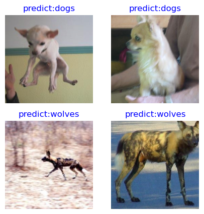

ResNet50 Transfer Learning

In practical application scenarios, the training dataset is insufficient, so few people will train the whole network from scratch. It is common practice to train on a very large underlying dataset to obtain a pre-trained model, which is then used to initialize the weight parameters of the network or applied as a fixed feature extractor for a specific task. In this chapter, the wolf and dog images in the ImageNet dataset will be classified by using transfer learning.
See Stanford University CS231n for details of transfer learning.
Data Preparation
Downloading the Dataset
Download the dog and wolf classification dataset used in the case. The images in the dataset are from ImageNet, and there are about 120 training images and 30 validation images for each classification. Use the download interface to download the dataset and automatically extract the downloaded dataset to the current directory.
from download import download
dataset_url = "https://mindspore-website.obs.cn-north-4.myhuaweicloud.com/notebook/datasets/intermediate/Canidae_data.zip"
download(dataset_url, "./datasets-Canidae", kind="zip", replace=True)
Creating data folder...
Downloading data from https://mindspore-website.obs.cn-north-4.myhuaweicloud.com/notebook/datasets/intermediate/Canidae_data.zip (11.3 MB)
file_sizes: 100%|██████████████████████████| 11.9M/11.9M [00:00<00:00, 17.1MB/s]
Extracting zip file...
Successfully downloaded / unzipped to ./datasets-Canidae
'./datasets-Canidae'
The directory structure of the dataset is as follows:
datasets-Canidae/data/
└── Canidae
├── train
│ ├── dogs
│ └── wolves
└── val
├── dogs
└── wolves
Loading the Dataset
The wolf and dog dataset is extracted from the ImageNet classification dataset, and the mindspore.dataset.ImageFolderDataset interface is used to load the dataset and perform the associated image transform operations.
First the execution process defines some inputs:
batch_size = 18 # Batch size
image_size = 224 # Size of training image space
num_epochs = 10 # Number of training cycles
lr = 0.001 # Learning rate
momentum = 0.9 # momentum
workers = 4 # Number of parallel threads
import mindspore as ms
import mindspore.dataset as ds
import mindspore.dataset.vision as vision
# Dataset directory path
data_path_train = "./datasets-Canidae/data/Canidae/train/"
data_path_val = "./datasets-Canidae/data/Canidae/val/"
# Create training dataset
def create_dataset_canidae(dataset_path, usage):
"""Data Loading"""
data_set = ds.ImageFolderDataset(dataset_path,
num_parallel_workers=workers,
shuffle=True,)
# Data transform operations
mean = [0.485 * 255, 0.456 * 255, 0.406 * 255]
std = [0.229 * 255, 0.224 * 255, 0.225 * 255]
scale = 32
if usage == "train":
# Define map operations for training dataset
trans = [
vision.RandomCropDecodeResize(size=image_size, scale=(0.08, 1.0), ratio=(0.75, 1.333)),
vision.RandomHorizontalFlip(prob=0.5),
vision.Normalize(mean=mean, std=std),
vision.HWC2CHW()
]
else:
# Define map operations for inference dataset
trans = [
vision.Decode(),
vision.Resize(image_size + scale),
vision.CenterCrop(image_size),
vision.Normalize(mean=mean, std=std),
vision.HWC2CHW()
]
# Data mapping operations
data_set = data_set.map(
operations=trans,
input_columns='image',
num_parallel_workers=workers)
# Batch operation
data_set = data_set.batch(batch_size)
return data_set
dataset_train = create_dataset_canidae(data_path_train, "train")
step_size_train = dataset_train.get_dataset_size()
dataset_val = create_dataset_canidae(data_path_val, "val")
step_size_val = dataset_val.get_dataset_size()
Dataset Visualization
The training dataset loaded from the mindspore.dataset.ImageFolderDataset interface returns a dictionary, and the user can create a data iterator by using the create_dict_iterator interface to iteratively access the dataset by using next. In this chapter, batch_size is set to 18, so use next to get 18 images and label data at a time.
data = next(dataset_train.create_dict_iterator())
images = data["image"]
labels = data["label"]
print("Tensor of image", images.shape)
print("Labels:", labels)
Tensor of image (18, 3, 224, 224)
Labels: Tensor(shape=[18], dtype=Int32, value= [1, 0, 0, 0, 1, 1, 0, 0, 0, 1, 0, 0, 0, 0, 0, 0, 1, 0])
Visualize the acquired images and label data, with the title as the name of the label corresponding to the image.
import matplotlib.pyplot as plt
import numpy as np
# class_name corresponds to label, and labels are marked in order from smallest to largest folder strings.
class_name = {0: "dogs", 1: "wolves"}
plt.figure(figsize=(5, 5))
for i in range(4):
# Get the image and its corresponding label
data_image = images[i].asnumpy()
data_label = labels[i]
# Processing images for display
data_image = np.transpose(data_image, (1, 2, 0))
mean = np.array([0.485, 0.456, 0.406])
std = np.array([0.229, 0.224, 0.225])
data_image = std * data_image + mean
data_image = np.clip(data_image, 0, 1)
# Display image
plt.subplot(2, 2, i+1)
plt.imshow(data_image)
plt.title(class_name[int(labels[i].asnumpy())])
plt.axis("off")
plt.show()

Training the Models
This chapter uses the ResNet50 model for training. After building the model framework, the pre-trained model for ResNet50 is downloaded by setting the pretrained parameter to True and loading the weight parameters into the network.
Constructing Resnet50 Network
from typing import Type, Union, List, Optional
from mindspore import nn, train
from mindspore.common.initializer import Normal
weight_init = Normal(mean=0, sigma=0.02)
gamma_init = Normal(mean=1, sigma=0.02)
class ResidualBlockBase(nn.Cell):
expansion: int = 1 # The number of last convolutional kernels is equal to the number of first convolutional kernels
def __init__(self, in_channel: int, out_channel: int,
stride: int = 1, norm: Optional[nn.Cell] = None,
down_sample: Optional[nn.Cell] = None) -> None:
super(ResidualBlockBase, self).__init__()
if not norm:
self.norm = nn.BatchNorm2d(out_channel)
else:
self.norm = norm
self.conv1 = nn.Conv2d(in_channel, out_channel,
kernel_size=3, stride=stride,
weight_init=weight_init)
self.conv2 = nn.Conv2d(in_channel, out_channel,
kernel_size=3, weight_init=weight_init)
self.relu = nn.ReLU()
self.down_sample = down_sample
def construct(self, x):
"""ResidualBlockBase construct."""
identity = x # shortcuts
out = self.conv1(x) # The first layer of main body: 3*3 convolutional layer
out = self.norm(out)
out = self.relu(out)
out = self.conv2(out) # The second layer of main body: 3*3 convolutional layer
out = self.norm(out)
if self.down_sample is not None:
identity = self.down_sample(x)
out += identity # The output is the sum of the main body and the shortcuts
out = self.relu(out)
return out
class ResidualBlock(nn.Cell):
expansion = 4 # The number of last convolutional kernels is 4 times the number of first convolutional kernels
def __init__(self, in_channel: int, out_channel: int,
stride: int = 1, down_sample: Optional[nn.Cell] = None) -> None:
super(ResidualBlock, self).__init__()
self.conv1 = nn.Conv2d(in_channel, out_channel,
kernel_size=1, weight_init=weight_init)
self.norm1 = nn.BatchNorm2d(out_channel)
self.conv2 = nn.Conv2d(out_channel, out_channel,
kernel_size=3, stride=stride,
weight_init=weight_init)
self.norm2 = nn.BatchNorm2d(out_channel)
self.conv3 = nn.Conv2d(out_channel, out_channel * self.expansion,
kernel_size=1, weight_init=weight_init)
self.norm3 = nn.BatchNorm2d(out_channel * self.expansion)
self.relu = nn.ReLU()
self.down_sample = down_sample
def construct(self, x):
identity = x # shortscuts
out = self.conv1(x) # The first layer of main body: 1*1 convolutional layer
out = self.norm1(out)
out = self.relu(out)
out = self.conv2(out) # The second layer of main body: 3*3 convolutional layer
out = self.norm2(out)
out = self.relu(out)
out = self.conv3(out) # The third layer of main body: 3*3 convolutional layer
out = self.norm3(out)
if self.down_sample is not None:
identity = self.down_sample(x)
out += identity # The output is the sum of the main body and the shortcuts
out = self.relu(out)
return out
def make_layer(last_out_channel, block: Type[Union[ResidualBlockBase, ResidualBlock]],
channel: int, block_nums: int, stride: int = 1):
down_sample = None # shortcuts
if stride != 1 or last_out_channel != channel * block.expansion:
down_sample = nn.SequentialCell([
nn.Conv2d(last_out_channel, channel * block.expansion,
kernel_size=1, stride=stride, weight_init=weight_init),
nn.BatchNorm2d(channel * block.expansion, gamma_init=gamma_init)
])
layers = []
layers.append(block(last_out_channel, channel, stride=stride, down_sample=down_sample))
in_channel = channel * block.expansion
# Stacked residual network
for _ in range(1, block_nums):
layers.append(block(in_channel, channel))
return nn.SequentialCell(layers)
from mindspore import load_checkpoint, load_param_into_net
class ResNet(nn.Cell):
def __init__(self, block: Type[Union[ResidualBlockBase, ResidualBlock]],
layer_nums: List[int], num_classes: int, input_channel: int) -> None:
super(ResNet, self).__init__()
self.relu = nn.ReLU()
# The first convolutional layer, with the number of input channel is 3 (color image) and the number of output channel is 64
self.conv1 = nn.Conv2d(3, 64, kernel_size=7, stride=2, weight_init=weight_init)
self.norm = nn.BatchNorm2d(64)
# Max pooling layer to reduce the size of the image
self.max_pool = nn.MaxPool2d(kernel_size=3, stride=2, pad_mode='same')
# Definitions of each residual network structure block
self.layer1 = make_layer(64, block, 64, layer_nums[0])
self.layer2 = make_layer(64 * block.expansion, block, 128, layer_nums[1], stride=2)
self.layer3 = make_layer(128 * block.expansion, block, 256, layer_nums[2], stride=2)
self.layer4 = make_layer(256 * block.expansion, block, 512, layer_nums[3], stride=2)
# Average pooling layer
self.avg_pool = nn.AvgPool2d()
# flattern layer
self.flatten = nn.Flatten()
# Fully-connected layer
self.fc = nn.Dense(in_channels=input_channel, out_channels=num_classes)
def construct(self, x):
x = self.conv1(x)
x = self.norm(x)
x = self.relu(x)
x = self.max_pool(x)
x = self.layer1(x)
x = self.layer2(x)
x = self.layer3(x)
x = self.layer4(x)
x = self.avg_pool(x)
x = self.flatten(x)
x = self.fc(x)
return x
def _resnet(model_url: str, block: Type[Union[ResidualBlockBase, ResidualBlock]],
layers: List[int], num_classes: int, pretrained: bool, pretrianed_ckpt: str,
input_channel: int):
model = ResNet(block, layers, num_classes, input_channel)
if pretrained:
# Load pre-trained models
download(url=model_url, path=pretrianed_ckpt, replace=True)
param_dict = load_checkpoint(pretrianed_ckpt)
load_param_into_net(model, param_dict)
return model
def resnet50(num_classes: int = 1000, pretrained: bool = False):
"ResNet50 model"
resnet50_url = "https://mindspore-website.obs.cn-north-4.myhuaweicloud.com/notebook/models/application/resnet50_224_new.ckpt"
resnet50_ckpt = "./LoadPretrainedModel/resnet50_224_new.ckpt"
return _resnet(resnet50_url, ResidualBlock, [3, 4, 6, 3], num_classes,
pretrained, resnet50_ckpt, 2048)
Fine-tuning the Models
Since the pre-trained model in ResNet50 is classified for 1000 categories in the ImageNet dataset. In this chapter only two categories, wolf and dog are classified, and it is necessary to reset the classifiers in the pre-trained model and then fine-tune the network again.
import mindspore as ms
network = resnet50(pretrained=True)
# Size of fully-connected layer input layer
in_channels = network.fc.in_channels
# The output channel number size is 2, same as the number of wolfdog classification
head = nn.Dense(in_channels, 2)
# Reset fully-connected layer
network.fc = head
# Average pooling layer kernel size is 7
avg_pool = nn.AvgPool2d(kernel_size=7)
# Reset the average pooling layer
network.avg_pool = avg_pool
import mindspore as ms
# Define optimizer and loss function
opt = nn.Momentum(params=network.trainable_params(), learning_rate=lr, momentum=momentum)
loss_fn = nn.SoftmaxCrossEntropyWithLogits(sparse=True, reduction='mean')
# Instantiate models
model = train.Model(network, loss_fn, opt, metrics={"Accuracy": train.Accuracy()})
def forward_fn(inputs, targets):
logits = network(inputs)
loss = loss_fn(logits, targets)
return loss
grad_fn = ms.value_and_grad(forward_fn, None, opt.parameters)
def train_step(inputs, targets):
loss, grads = grad_fn(inputs, targets)
opt(grads)
return loss
Training and Evaluation
Train and evaluate the network, and after the training is completed, save the ckpt file with the highest evaluation accuracy (resnet50-best.ckpt) to the current path under /BestCheckpoint. The save path and ckpt file name can be adjusted by yourself.
# Create the iterator
data_loader_train = dataset_train.create_tuple_iterator(num_epochs=num_epochs)
# Optimal model save path
best_ckpt_dir = "./BestCheckpoint"
best_ckpt_path = "./BestCheckpoint/resnet50-best.ckpt"
import os
import time
# Start circuit training
print("Start Training Loop ...")
best_acc = 0
for epoch in range(num_epochs):
losses = []
network.set_train()
epoch_start = time.time()
# Reads in data for each training round
for i, (images, labels) in enumerate(data_loader_train):
labels = labels.astype(ms.int32)
loss = train_step(images, labels)
losses.append(loss)
# Verify the accuracy after each epoch
acc = model.eval(dataset_val)['Accuracy']
epoch_end = time.time()
epoch_seconds = (epoch_end - epoch_start) * 1000
step_seconds = epoch_seconds/step_size_train
print("-" * 20)
print("Epoch: [%3d/%3d], Average Train Loss: [%5.3f], Accuracy: [%5.3f]" % (
epoch+1, num_epochs, sum(losses)/len(losses), acc
))
print("epoch time: %5.3f ms, per step time: %5.3f ms" % (
epoch_seconds, step_seconds
))
if acc > best_acc:
best_acc = acc
if not os.path.exists(best_ckpt_dir):
os.mkdir(best_ckpt_dir)
ms.save_checkpoint(network, best_ckpt_path)
print("=" * 80)
print(f"End of validation the best Accuracy is: {best_acc: 5.3f}, "
f"save the best ckpt file in {best_ckpt_path}", flush=True)
Start Training Loop ...
--------------------
Epoch: [ 1/ 10], Average Train Loss: [0.582], Accuracy: [1.000]
epoch time: 201648.793 ms, per step time: 14403.485 ms
--------------------
Epoch: [ 2/ 10], Average Train Loss: [0.290], Accuracy: [0.967]
epoch time: 171260.342 ms, per step time: 12232.882 ms
--------------------
Epoch: [ 3/ 10], Average Train Loss: [0.126], Accuracy: [1.000]
epoch time: 204468.052 ms, per step time: 14604.861 ms
......
--------------------
Epoch: [ 10/ 10], Average Train Loss: [0.057], Accuracy: [1.000]
epoch time: 1339063.144 ms, per step time: 95647.367 ms
================================================================================
End of validation the best Accuracy is: 1.000, save the best ckpt file in ./BestCheckpoint/resnet50-best.ckpt
Visualizing the Model Prediction
Define the visualize_mode function to visualize model predictions.
import matplotlib.pyplot as plt
import mindspore as ms
def visualize_model(best_ckpt_path, val_ds):
net = resnet50()
# Size of fully-connected layer input layer
in_channels = net.fc.in_channels
# The output channel number size is 2, same as the number of wolfdog classification
head = nn.Dense(in_channels, 2)
# Reset fully-connected layer
net.fc = head
# Average pooling layer kernel size is 7
avg_pool = nn.AvgPool2d(kernel_size=7)
# Reset average pooling layer
net.avg_pool = avg_pool
# Load model parameters
param_dict = ms.load_checkpoint(best_ckpt_path)
ms.load_param_into_net(net, param_dict)
model = train.Model(net)
# Load the data from the validation set for validation
data = next(val_ds.create_dict_iterator())
images = data["image"].asnumpy()
labels = data["label"].asnumpy()
class_name = {0: "dogs", 1: "wolves"}
# Predicted image categories
output = model.predict(ms.Tensor(data['image']))
pred = np.argmax(output.asnumpy(), axis=1)
# Display images and predicted values of images
plt.figure(figsize=(5, 5))
for i in range(4):
plt.subplot(2, 2, i + 1)
# If the prediction is correct, the display is blue, and if the prediction is wrong, the display is red
color = 'blue' if pred[i] == labels[i] else 'red'
plt.title('predict:{}'.format(class_name[pred[i]]), color=color)
picture_show = np.transpose(images[i], (1, 2, 0))
mean = np.array([0.485, 0.456, 0.406])
std = np.array([0.229, 0.224, 0.225])
picture_show = std * picture_show + mean
picture_show = np.clip(picture_show, 0, 1)
plt.imshow(picture_show)
plt.axis('off')
plt.show()
The best.ckpt file obtained by fine-tuning the model is used to make predictions for the wolf and dog image data in the validation set. If the prediction font is blue, it means the prediction is correct, and if the prediction font is red, it means the prediction is wrong.
visualize_model(best_ckpt_path, dataset_val)

Training with Fixed Features
When training with fixed features, it is necessary to freeze all network layers except the last one. Freeze the parameters by setting requires_grad == False so that the gradients are not computed in the backward propagation.
net_work = resnet50(pretrained=True)
# Size of fully-connected layer input layer
in_channels = net_work.fc.in_channels
# The output channel number size is 2, same as the number of wolfdog classification
head = nn.Dense(in_channels, 2)
# Reset fully-connected layer
net_work.fc = head
# Average pooling layer kernel size is 7
avg_pool = nn.AvgPool2d(kernel_size=7)
# Reset average pooling layer
net_work.avg_pool = avg_pool
# Freeze all parameters except the last layer
for param in net_work.get_parameters():
if param.name not in ["fc.weight", "fc.bias"]:
param.requires_grad = False
# Define optimizer and loss function
opt = nn.Momentum(params=net_work.trainable_params(), learning_rate=lr, momentum=0.5)
loss_fn = nn.SoftmaxCrossEntropyWithLogits(sparse=True, reduction='mean')
def forward_fn(inputs, targets):
logits = net_work(inputs)
loss = loss_fn(logits, targets)
return loss
grad_fn = ms.value_and_grad(forward_fn, None, opt.parameters)
def train_step(inputs, targets):
loss, grads = grad_fn(inputs, targets)
opt(grads)
return loss
# Instantiate models
model1 = train.Model(net_work, loss_fn, opt, metrics={"Accuracy": train.Accuracy()})
Training and Evaluation
Starting to train the model will save a large amount of time compared to not pre-training the model, as some of the gradients can be eliminated from calculation at this point. Save the ckpt file with the highest evaluation accuracy in the current path of ./BestCheckpoint/resnet50-best-freezing-param.ckpt.
dataset_train = create_dataset_canidae(data_path_train, "train")
step_size_train = dataset_train.get_dataset_size()
dataset_val = create_dataset_canidae(data_path_val, "val")
step_size_val = dataset_val.get_dataset_size()
num_epochs = 10
# Creating Iterators
data_loader_train = dataset_train.create_tuple_iterator(num_epochs=num_epochs)
data_loader_val = dataset_val.create_tuple_iterator(num_epochs=num_epochs)
best_ckpt_dir = "./BestCheckpoint"
best_ckpt_path = "./BestCheckpoint/resnet50-best-freezing-param.ckpt"
# Start circuit training
print("Start Training Loop ...")
best_acc = 0
for epoch in range(num_epochs):
losses = []
net_work.set_train()
epoch_start = time.time()
# Read in data for each training round
for i, (images, labels) in enumerate(data_loader_train):
labels = labels.astype(ms.int32)
loss = train_step(images, labels)
losses.append(loss)
# Verify the accuracy after each epoch
acc = model1.eval(dataset_val)['Accuracy']
epoch_end = time.time()
epoch_seconds = (epoch_end - epoch_start) * 1000
step_seconds = epoch_seconds/step_size_train
print("-" * 20)
print("Epoch: [%3d/%3d], Average Train Loss: [%5.3f], Accuracy: [%5.3f]" % (
epoch+1, num_epochs, sum(losses)/len(losses), acc
))
print("epoch time: %5.3f ms, per step time: %5.3f ms" % (
epoch_seconds, step_seconds
))
if acc > best_acc:
best_acc = acc
if not os.path.exists(best_ckpt_dir):
os.mkdir(best_ckpt_dir)
ms.save_checkpoint(net_work, best_ckpt_path)
print("=" * 80)
print(f"End of validation the best Accuracy is: {best_acc: 5.3f}, "
f"save the best ckpt file in {best_ckpt_path}", flush=True)
Start Training Loop ...
--------------------
Epoch: [ 1/ 10], Average Train Loss: [0.692], Accuracy: [0.617]
epoch time: 88396.114 ms, per step time: 6314.008 ms
--------------------
Epoch: [ 2/ 10], Average Train Loss: [0.579], Accuracy: [0.983]
epoch time: 89851.366 ms, per step time: 6417.955 ms
--------------------
Epoch: [ 3/ 10], Average Train Loss: [0.511], Accuracy: [0.983]
epoch time: 73737.748 ms, per step time: 5266.982 ms
......
--------------------
Epoch: [ 10/ 10], Average Train Loss: [0.280], Accuracy: [1.000]
epoch time: 69964.226 ms, per step time: 4997.445 ms
================================================================================
End of validation the best Accuracy is: 1.000, save the best ckpt file in ./BestCheckpoint/resnet50-best-freezing-param.ckpt
Visualizing Model Prediction
The best.ckpt file obtained by using the fixed features is used to make predictions on the wolf and dog image data of the validation set. If the prediction font is blue, the prediction is correct. If the prediction font is red, the prediction is wrong.
visualize_model(best_ckpt_path, dataset_val)
